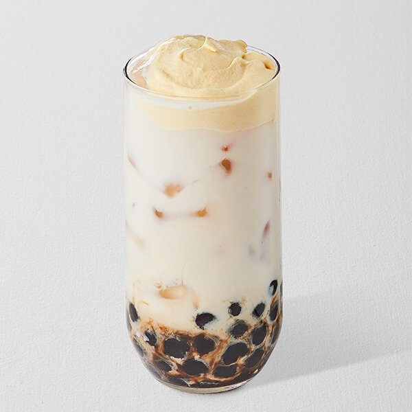
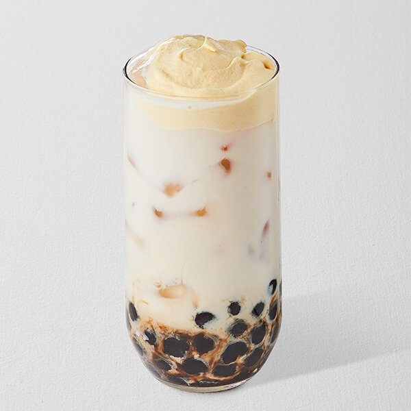

Our most popular drinks!

 

About Mochi's Bubbles
We are a small bubble tea chain, founded in Boston in 2022. Everything started with the owner' passion for bubble tea. Besides that, she loves cooking sweets, because of that we also have desserts available in our store. Bubble tea arrived in the US in the 1990s, since then, multiple chains and small business owners opened their own bubble tea store. Mochi's Bubbles is now another unique one.